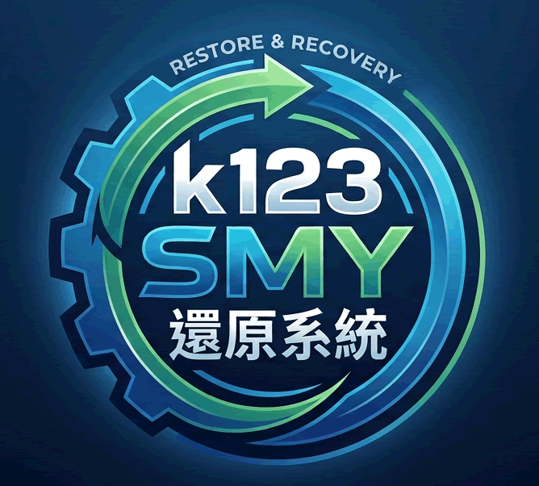
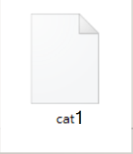
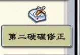

SMY還原系統重點
BIOS 設定重點整理 — AHCI 模式切換 & 遠端喚醒 WOL & 第二顆硬碟
AHCI 模式切換指南
Acer & ASUS重要事前準備 （必做）
若系統已有 Windows，直接改 AHCI 會導致無法開機並出現藍屏（Blue Screen）。請務必按照以下步驟操作。
進入 Windows，按下 Win + R 輸入
msconfig。切換至「開機 (Boot)」分頁，勾選「安全開機 (Safe Boot)」並儲存。
重新開機，準備進入 BIOS。
方案 A：Acer 筆記型電腦 （解鎖隱藏選單）
開機時連續狂按 F2 鍵進入 BIOS。
使用左右方向鍵，切換到 Main 分頁。
在此畫面上，同時按下隱藏熱鍵 Ctrl + S。
此時原本隱藏的 SATA Mode 或 VMD Controller 就會出現。
將其從 Optane / RAID / VMD 更改為 AHCI。
按下 F10 儲存並重啟。
方案 B：Acer 桌上型電腦 （Veriton 系列等）
開機時連續狂按 Del 進入 BIOS。
進入 BIOS 後先按一次 F1 鍵。
移至頂部 Advanced > Integrated Peripherals。
如果有 Onboard SATA Mode，直接改為 AHCI。
如果沒看到，按 Ctrl + S（部分機種為 Ctrl + D）。
將跳出的 VMD Controller 設為 Disabled，下方 SATA Mode 即會自動切換為 AHCI Only。
按下 F10 儲存並重啟。
改完後的最後步驟
改完重新開機後，系統會自動以「安全模式」啟動 Windows。進入系統確認能正常運作後，再次打開
msconfig，將「安全開機」取消勾選，再次重啟即可。如果更改後無法正常回到 Windows，請確認電腦型號以查詢該型號特定的 Intel VMD 關閉方法。
華碩桌上型電腦 / 早期筆電 （更改 AHCI）
開機時連續狂按 Del 或 F2 進入 BIOS。
按下 F7 進入 Advanced Mode（進階模式）。
切換到頂部的 Advanced 分頁。
找到並進入 SATA Configuration。
將 SATA Mode Selection 從 RAID/IDE 改為 AHCI。
按下 F10 儲存並重啟。
華碩新世代電腦 （Intel 11代+ / VMD）
開機連續狂按 F2 進入 BIOS。
按下 F7 進入 Advanced Mode。
切換到 Advanced 分頁。
找到並進入 VMD setup menu。
將 Enable VMD controller 改為 Disabled。
確認警告，底層會自動回歸 AHCI 模式。
按下 F10 儲存並重啟。
改完後的最後步驟
改完重啟後，電腦會自動以「安全模式」進入 Windows。順利進入桌面後，再次打開
msconfig，將「安全開機」取消勾選，然後正常重新開機一次就完成了。遠端喚醒 WOL 設定指南
Wake-on-LANWindows 系統內必做設定
主機板 BIOS 改完後，還需要在 Windows 中完成以下設定。
進入「裝置管理員」> 展開「網路介面卡」> 雙擊實體網卡。
進入「進階」分頁，將 Magic Packet 喚醒 設為 已啟用。
進入「電源管理」分頁，勾選「允許這個裝置喚醒電腦」。
進入「控制台」> 電源選項 > 取消勾選「開啟快速啟動」（必做）。
各大品牌主機板 BIOS 設定
所有品牌進入 BIOS 後，請先按 F7 切換到 Advanced Mode（進階模式）。
華碩 ASUS
- 進入 Advanced > APM Configuration。
- 將 Power On By PCI-E 設為 Enabled。
- 進入 Platform Misc Configuration，將 ErP Ready 設為 Disabled。
技嘉 GIGABYTE
- 進入 Settings > Platform Power。
- 將 ErP 設為 Disabled。
- 將 Wake on LAN 設為 Enabled。
微星 MSI
- 進入 Settings > Advanced > Wake Up Event Setup。
- 將 Resume By PCI-E Device 設為 Enabled。
- 進入 Power Management Setup，將 ErP Ready 設為 Disabled。
華擎 ASRock
- 進入 Advanced > ACPI Configuration。
- 將 PCIE Devices Power On 設為 Enabled。
- 確保 Deep Sleep 保持在 Disabled 狀態。
宏碁 Acer
- 進入 Advanced > Power Management Setup。
- 將 Wake on LAN 或 Resume by PME 設為 Enabled。
- 筆電若找不到選項，可能僅支援「睡眠中喚醒」，直接設定 Windows 內網卡即可。
關鍵排錯：為什麼設定了還是無法喚醒？
電腦一定要插著實體網路線。WOL 無法透過 Wi-Fi 無線網路發動（除非支援 WoWLAN，但非常罕見）。
關機時觀察網卡燈號：完成 BIOS 與 ErP 關閉設定後，網路孔燈號必須是亮著或閃爍的，代表網卡仍在通電待命。
你的遠端喚醒是在區網內使用，還是要從外網遠端開機？如果是後者，還需要設定路由器（Router）的 Port Forwarding 或綁定 IP 與 MAC。
第二顆硬碟問題
磁碟代號問題說明
PE 環境如果自己加裝第二顆硬碟當資料夾，磁碟機代號常會亂掉。
重要技巧：PE 要採用 SMY 20240206 以後版本才行。

在第二顆硬碟上建立cat1文件並隱藏

執行 SMY TOOL 第二硬碟修正自動改磁碟代號
第一階段
在第 2 顆硬碟第 1 分區，建立
cat1 文件並隱藏。若有第 2 分區，建立
cat2 文件並隱藏；若有第 3 分區，建立 cat3 文件並隱藏。依此類推（分區或整顆其他硬碟都如此處理）。
執行 SMY TOOL 第二硬碟修正，就會自動改磁碟。
合併母碟、建立子碟等磁碟工具才能生效。
第二階段
所有其他硬碟都已經建立
cat 文件並隱藏（例如 cat1、cat2、cat3...）。執行 SMY TOOL 第二硬碟修正，就會自動改磁碟。
合併母碟、建立子碟等磁碟工具才能生效。